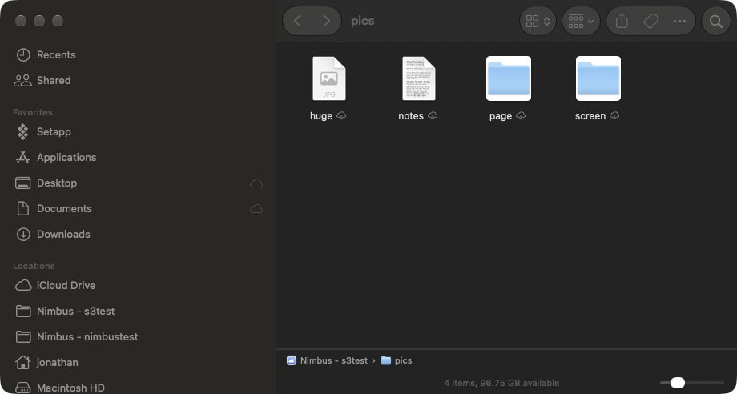
Thumbnails before download
Photos and PDFs in the cloud show real previews in Finder, rendered on demand and cached, so you can find the right file without pulling it down first.
Nimbus for Mac
S3, Google Drive, OneDrive, Dropbox, SFTP and fifty more services become volumes on your Mac. Browse them like Finder. Show them in Finder. Copy and sync between them. No account. Nothing phoning home.
Version 0.9.1 · macOS 15 or later · Apple silicon and Intel · GPL‑3.0 · Signed and notarized
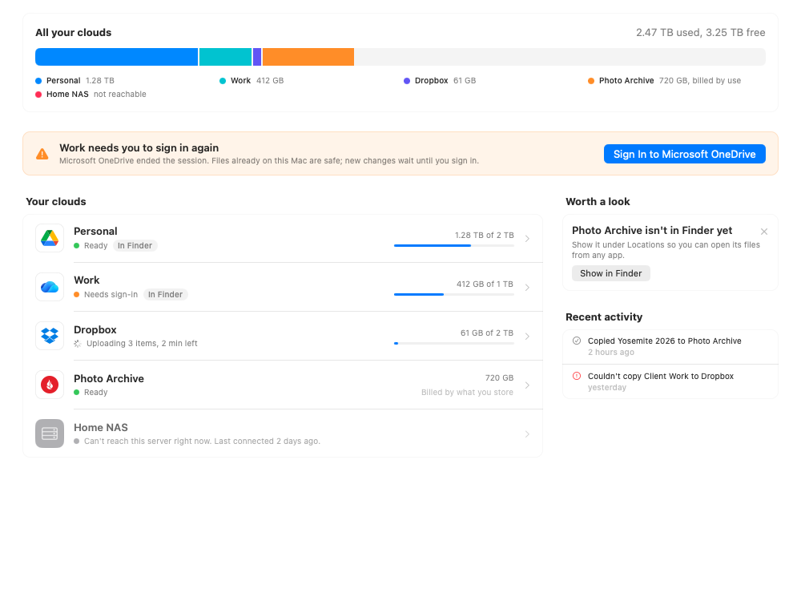
Home
Nimbus opens on Home. One storage bar covers all your clouds. Every cloud gets a row with its capacity and a status in plain words, and when something needs you, the button that fixes it is right there.
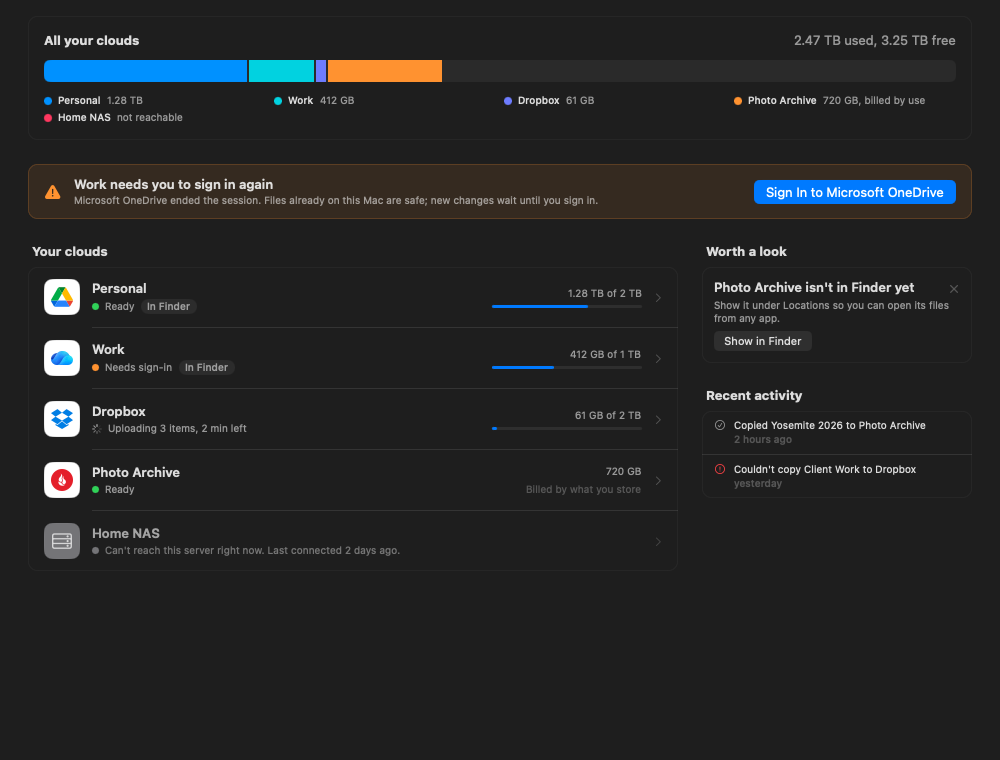
“Ready.” “Needs sign‑in.” “Can’t reach this server right now.” No rclone vocabulary anywhere outside Settings › Advanced.
When a cloud ends your session, Home says so and offers the sign‑in button. Files already on your Mac stay safe; new changes wait until you’re back.
Gentle suggestions, like showing a cloud in Finder, with a one‑click action and an × to dismiss. Never a nag.
Finder
A File Provider extension lists each cloud in Finder’s sidebar. Files download when you open them, edits go back up, and macOS manages the local copies. Or mount a cloud the classic way as a network volume. Your choice, per volume.
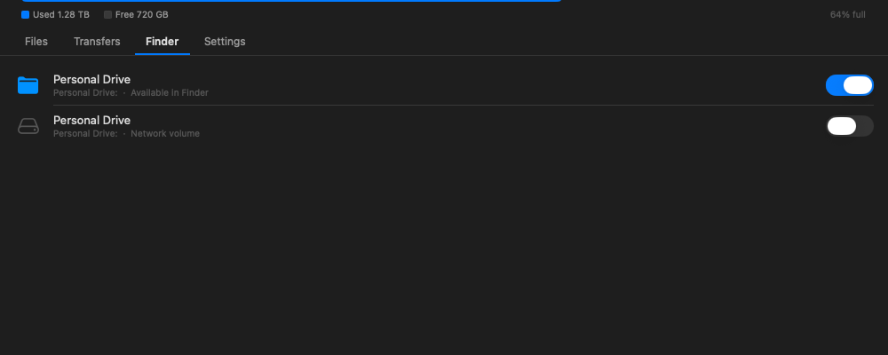

Photos and PDFs in the cloud show real previews in Finder, rendered on demand and cached, so you can find the right file without pulling it down first.
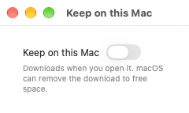
Pin a file or folder and it stays downloaded. Finder’s own “Keep Downloaded” and “Remove Download” commands work too, and the pin glyph shows in the list.
Right‑click a file in Finder, or use the inspector, and Nimbus asks the cloud for a public link and puts it on your clipboard. Only for clouds that can.
Add, rename or delete something from another device or the web, and Finder picks it up. Every refresh in Nimbus (and ⌘R) signals the working set, and the extension diffs each known folder against its last listing. No re‑import, no relaunch.
Prefer a mount? rclone serves the cloud over NFS and the system’s own client mounts it. Mounts come back after a restart and unmount cleanly on quit.
Save a document in any app, make a folder, rename, move or trash, all from Finder. The extension carries each change to the cloud and the file keeps Nimbus’s icon and the name you gave the volume in the sidebar.
Browser
Nimbus is SwiftUI and AppKit, not a web view in a frame. Selection, drag and drop, Quick Look, keyboard shortcuts and column sorting behave the way they do in Finder, because Finder was the bar.
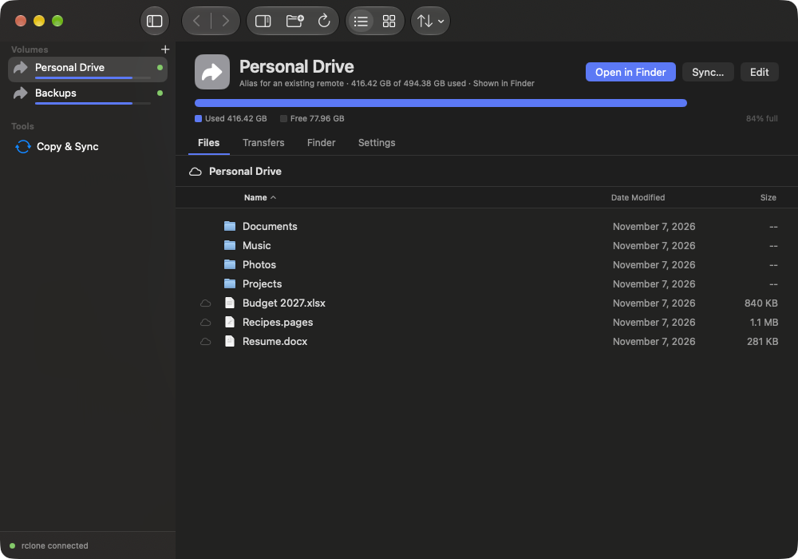
Files draw with the system’s own document icons and Finder’s folder, so a listing reads like one of Finder’s.
Click, shift‑click, ⌘‑click. Type a name to jump to it. Space for Quick Look. Column headers that sort.
A small cloud beside files not yet downloaded, a ring while one downloads, nothing at all for files already on disk.
Drop files from one volume onto another and Nimbus runs the copy through rclone and shows its progress.
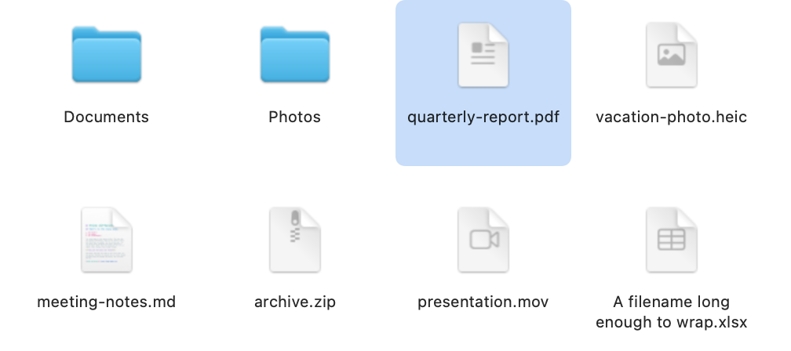
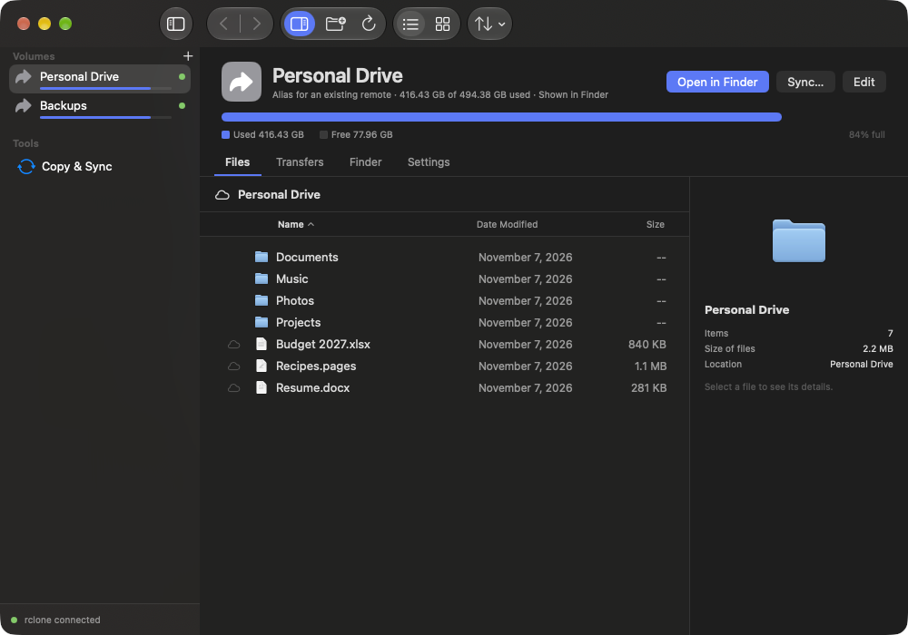
Disk Utility shows you a drive: how full it is, what you can do to it, what is happening on it. Nimbus does that for a cloud, in one pane.
A bar under each volume in the sidebar and a used‑and‑free gauge in the pane, straight from the provider’s own quota.
Files, Transfers, Finder and Settings, each scoped to that volume. Switching tabs never loses your place.
Cloud status, size, dates, Keep on this Mac and the share link, for whatever you have selected.
Add Cloud
Pick a service from the tiles. For Google Drive, OneDrive, Dropbox and friends, Nimbus opens the provider’s own sign‑in page in your browser. Nimbus never sees your password. For servers like S3, SFTP and WebDAV, it asks exactly the questions that backend needs and nothing more.
The flow is driven by rclone’s configuration state machine, so a new backend in rclone works in Nimbus with no app update.
Power users get every advanced field. Everyone else never sees them.
Nimbus reads and writes the standard rclone config file. The rclone command line keeps working next to it, and an existing file imports with a preview.
Cancel midway and no partial or unauthenticated remote is left behind.
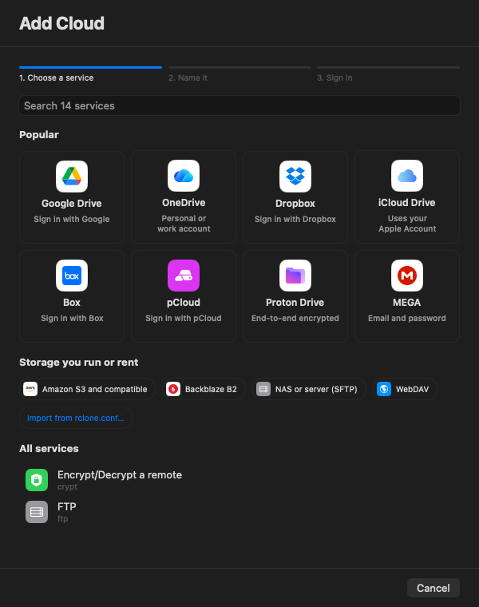
Copy & Sync
Copy or sync between any two volumes or local folders. Transfers show up in a drawer along the bottom while they run and as a progress capsule in the toolbar, like a Finder copy. Every volume keeps its own history.
Drag onto another cloud and Nimbus asks how to handle duplicates before anything moves.
A plain‑language speed menu limits bandwidth so a big sync never takes over your connection.
What moved, where, when, and whether it worked. A notification when a long job ends.
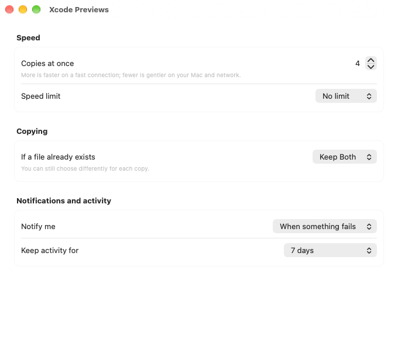
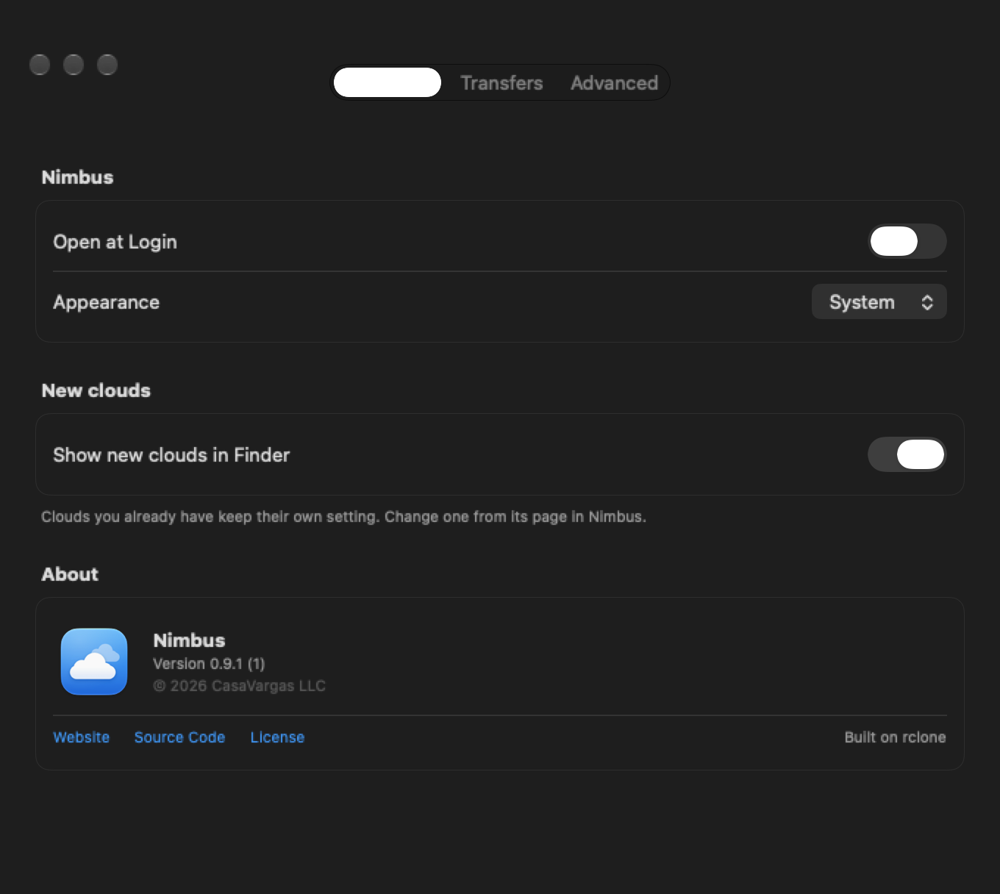
Settings
Dense, sectioned, familiar. Engine status at a glance, launch at login, the speed menu, and an Advanced pane for the rclone path and the people who want to see the wiring.
Copy a sanitized system report or open the app’s logs in Console. No account data ever leaves the report unredacted.
Every screen follows the system appearance, with no custom themes to fight it.
Privacy
No account. No sign‑in with Nimbus. No telemetry. No update pinging. Here is the complete list of what talks to what.
| Who | When | Where |
|---|---|---|
| rclone, to the providers you configured | When you browse, copy, sync or open a file | Your remotes only |
| rclone, to the provider’s sign‑in page | Once per OAuth provider, during setup | Through your browser |
| Anything else | Never | There is nothing else |
Nimbus is GPL‑3.0‑or‑later. You can read every line that runs on your Mac.
Under the hood
The app and its Finder extension talk to the same local rclone through RcloneKit, a typed Swift client for rclone’s remote‑control API, over loopback. No provider is reimplemented in Swift.
SwiftUI with AppKit where it draws better: the file table is a virtualized NSTableView hosting SwiftUI rows. Zero third‑party Swift packages, and a pre‑build check fails the build if one appears.
The configuration flow and listing semantics are pinned by tests that run the actual binary, so an rclone upgrade that changes behaviour fails loudly instead of silently.
Showing or hiding a volume in Finder records your intent first, reconciles the File Provider domain in the background, and rolls back if registration fails.
| Nimbus | Mountain Duck | ExpanDrive | Cyberduck | rclone CLI | |
|---|---|---|---|---|---|
| Price model | Free, source and signed builds alike | One‑time license per major version | One‑time license per major version* | Free, paid on the Mac App Store | Free |
| Open source | Yes, GPL‑3.0 | No | No | Yes, GPL‑3.0 | Yes, MIT |
| UI | Native SwiftUI and AppKit | Cocoa over a Java core | Electron* | Cocoa over a Java core | None |
| Finder / mount | File Provider and NFS | File Provider and FUSE‑style | Mounts* | No mounting | FUSE or NFS |
| Providers | Everything rclone supports, 50+ | Its own, about 20* | Its own* | Its own, about 20* | 50+ |
| Reuses your rclone config | Yes | No | No | No | n/a |
* Not verified against a current release. Corrections welcome.
From the same studio
Nimbus costs nothing. Not the source, not the signed app, and that will not change. Casa Vargas sells two apps, each bought once and kept, and they pay for the time. If Nimbus is useful to you, this is the way to say thanks.
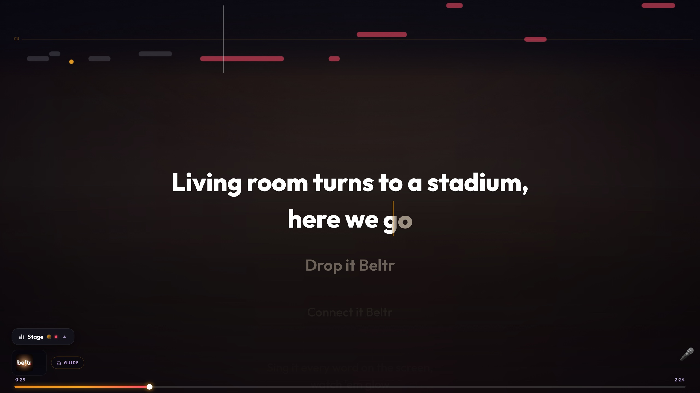
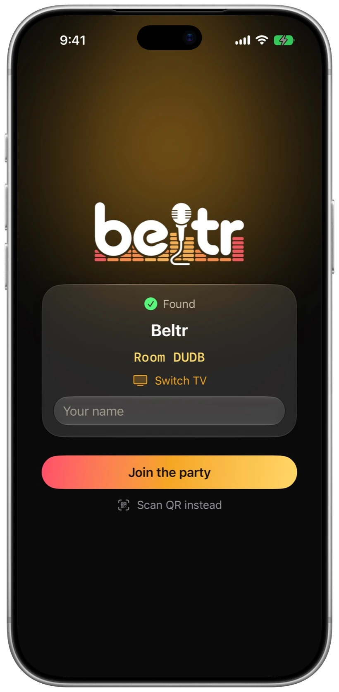
Karaoke from the music you already own.
Beltr turns the songs already on your computer into karaoke on your TV, and every phone in the room becomes a remote and a mic. Mac, Windows and Linux, with free phone and TV companions.
$19.99 once, five songs free to try

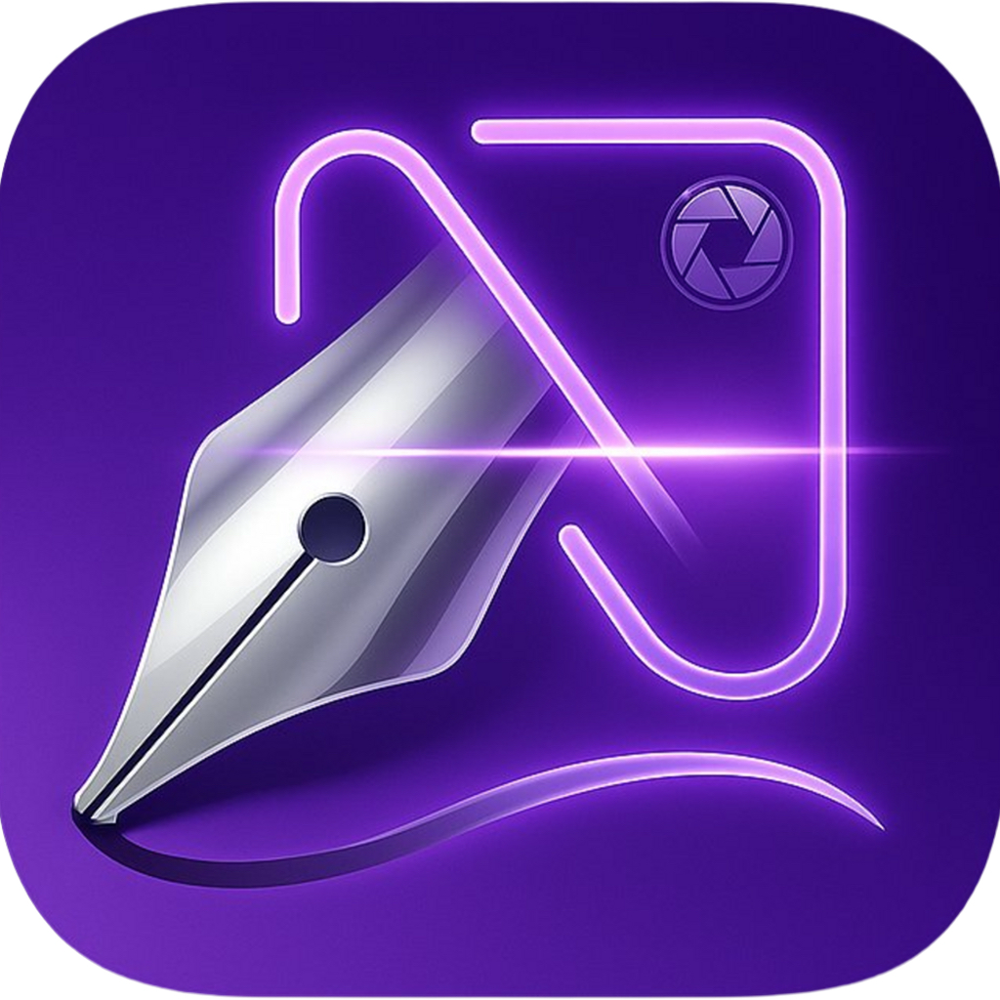
A document scanner that reads what it scans.
OneScribe reads what you scan and turns it into organized, searchable details, with the AI running on your iPhone or iPad. Nothing you scan leaves the device.
Free to scan; Pro is $9.99 once
Free. Signed with a Developer ID certificate and notarized, so Gatekeeper opens it without a warning. Pre‑1.0, used daily by its author, and still growing.
brew install rclone.sha256 sits beside every DMG